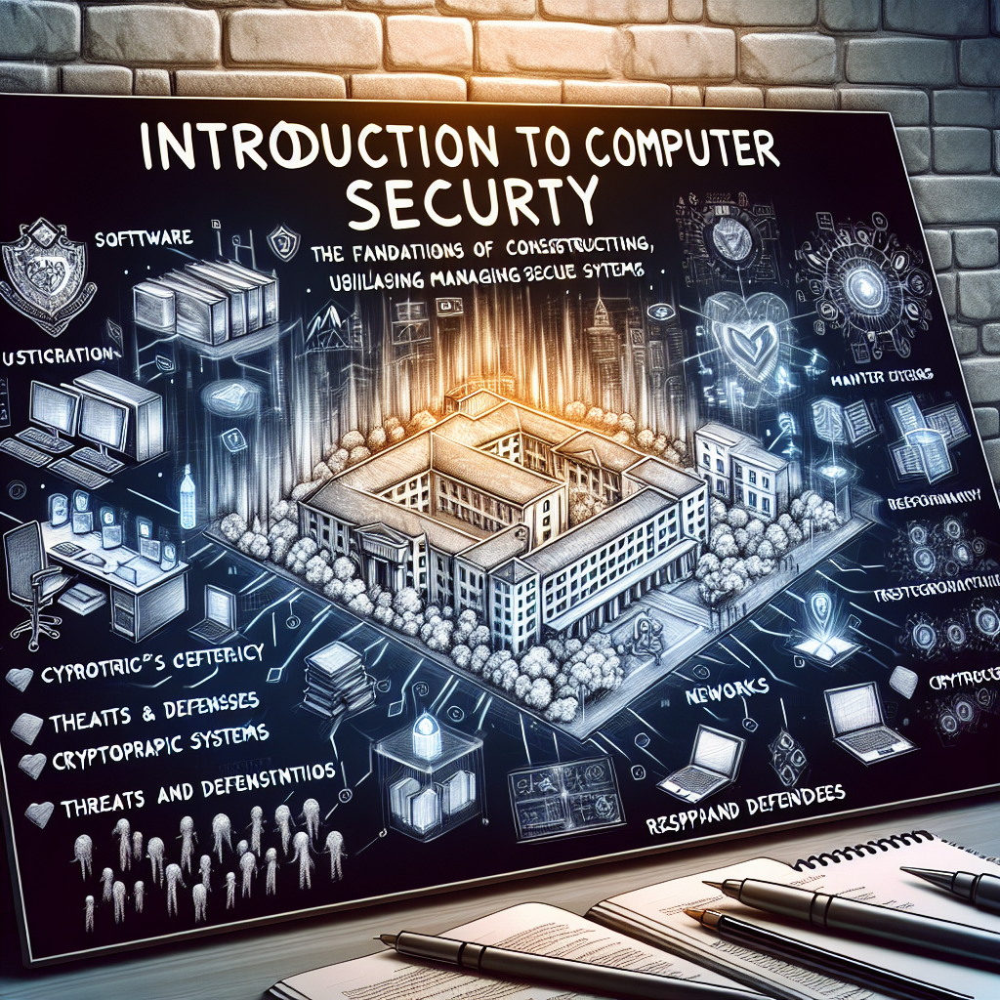
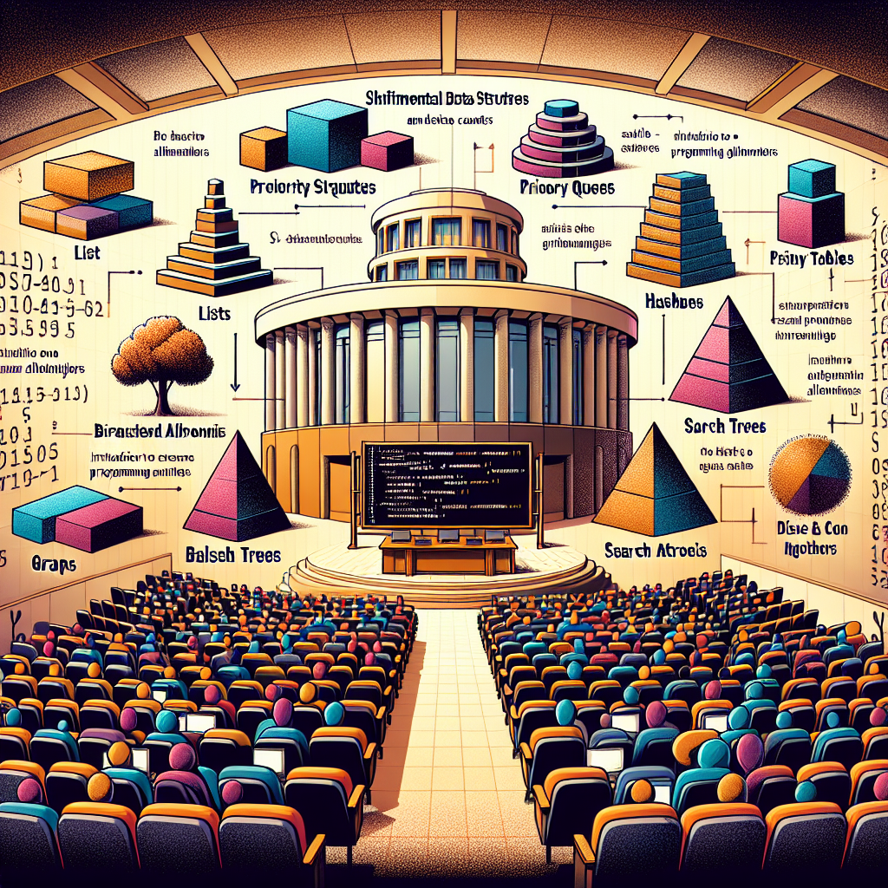
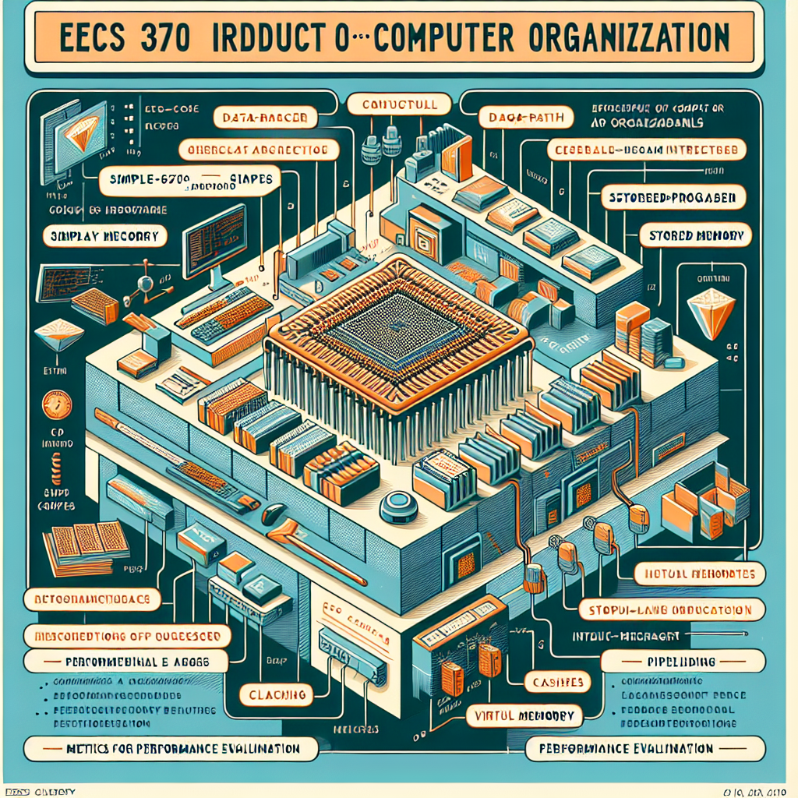
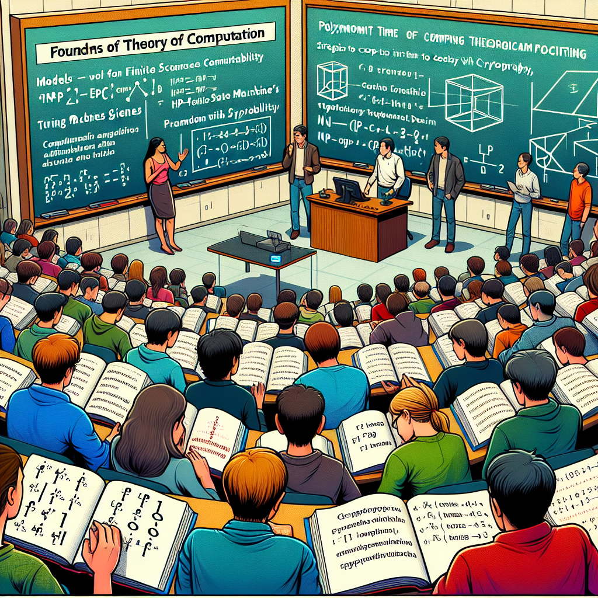
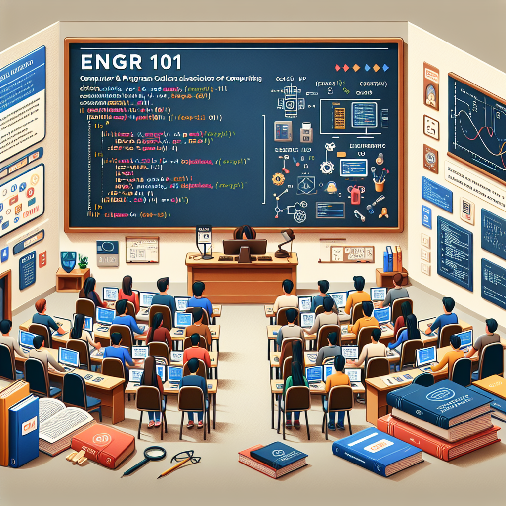
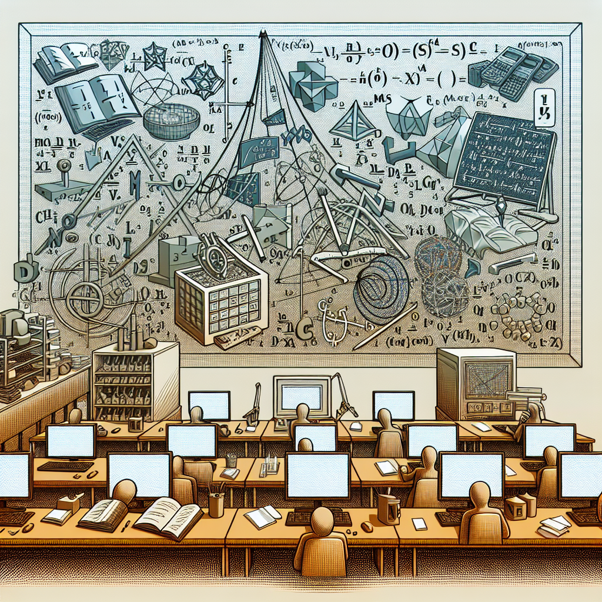
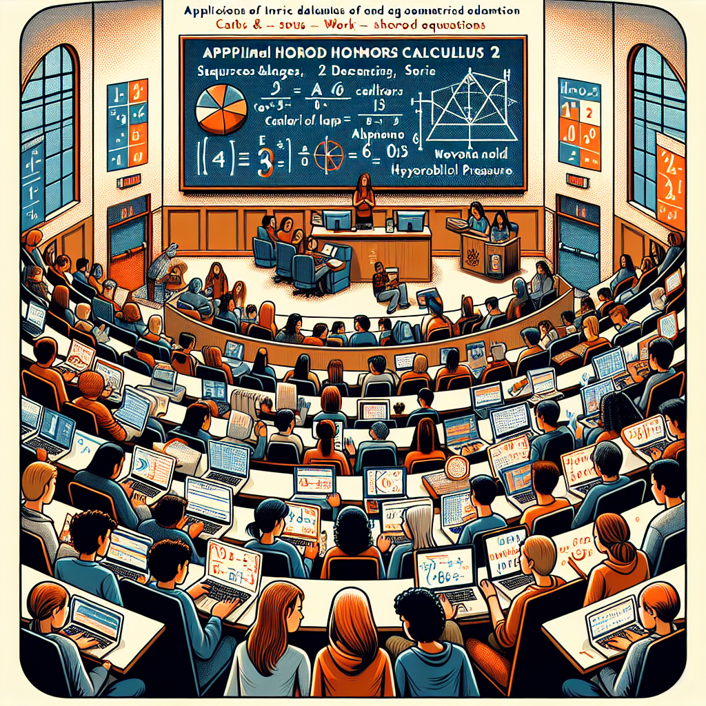
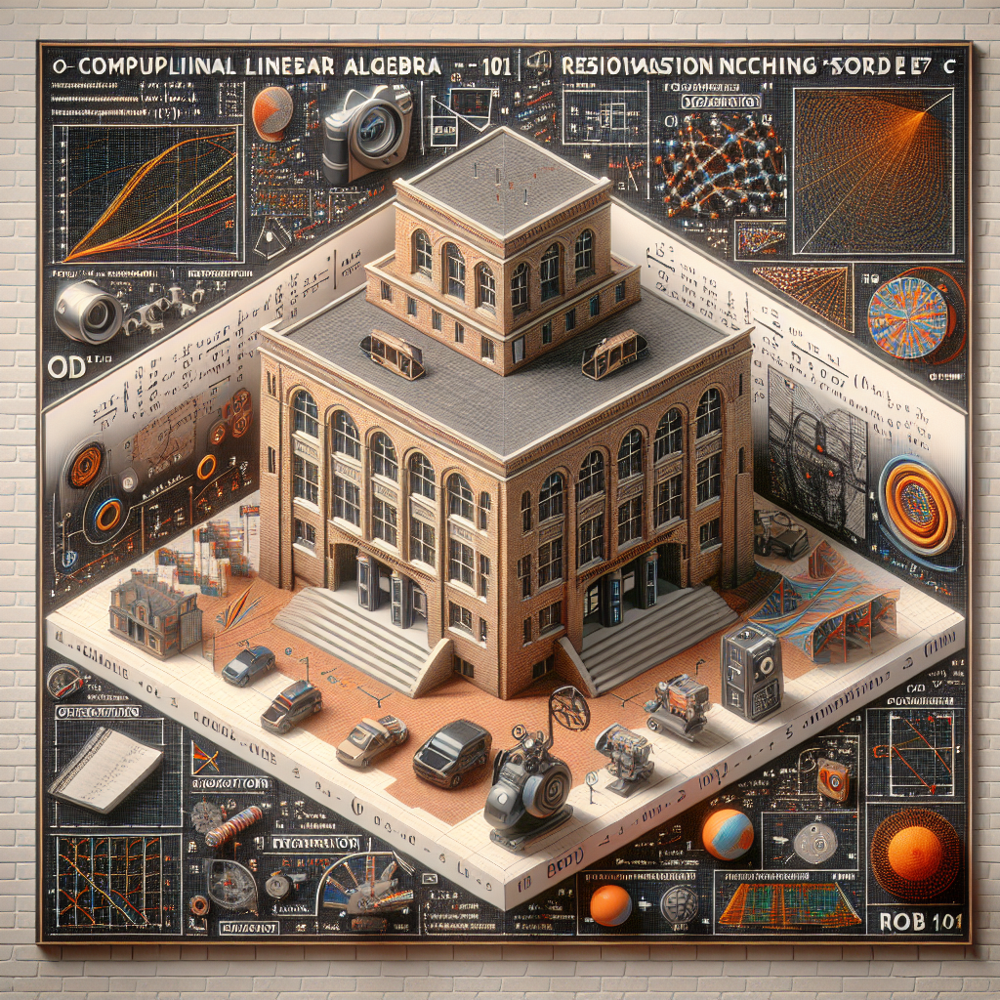
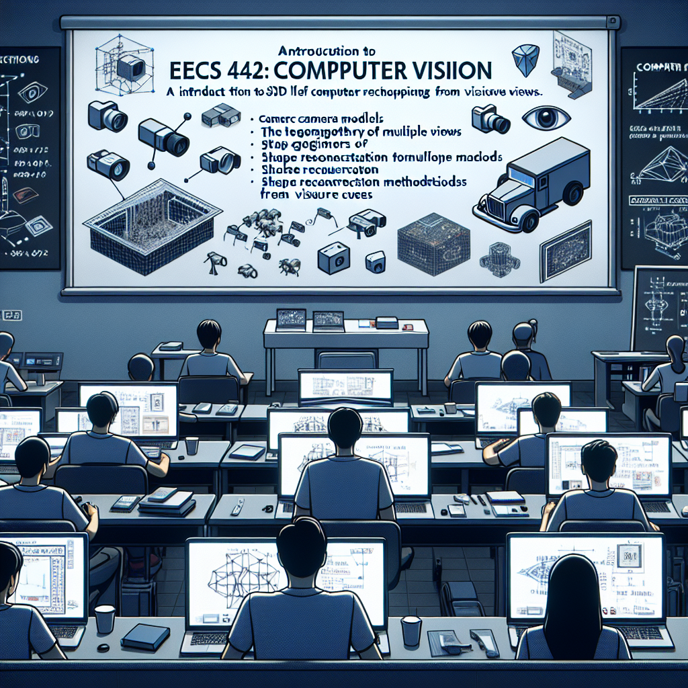
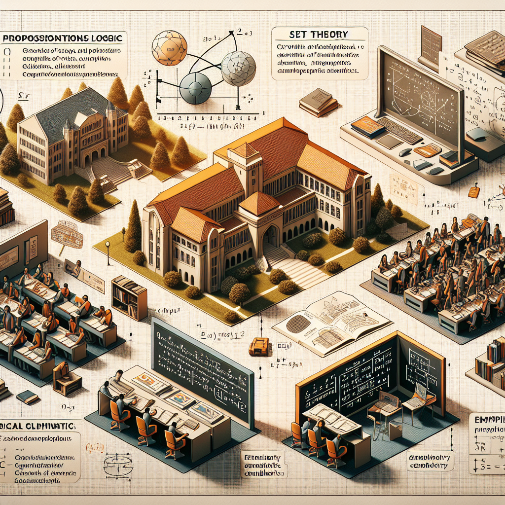

Classes
Below is a list of all of the classes most related to my computer science major. Each one has a description of the class as well as a rating and reasoning for this rating based off of how much I enjoyed the class and how much I felt I learned from it.
EECS 388 - Introduction to Computer Security
Description: Introduction to the principles and practices of computer security as applied to software, host systems, and networks. Covers the foundations of building, using, and managing secure systems. Topics include standard cryptographic functions and protocols, threats and defenses for real-world systems, include response, and computer forensics.
Rating: 9/10. One of the most enjoyable classes that I have ever taken at UofM. This class is the main reason why I am currently interested in studying computer security more than any other topic in computer science. Would highly recommend.
EECS 280 - Programming and Introductory Data Structures
Description: Algorithm development and effective programming, top-down analysis, structured programming, testing, and program correctness. Program language syntax and static and runtime semantics. Scope, procedure instantiation, recursion, abstract data types, and parameter passing methods. Structured data types, pointers, linked data structures, stacks, queues, arrays, records, and trees.
Rating: 8.5/10. I absolutely loved the projects as they all had a theme to them but the exams to me, at the time, were awful. Now, I believe these exams were not that bad at all.
EECS 281 - Data Structures and Algorithms
Description: Introduction to the algorithm analysis and O-notation; Fundamental data structures including lists, stacks, queues, priority queues, hash tables, binary trees, search trees, balanced, trees, and graphs; searching and sorting algorithms; recursive algorithms; basic graph algorithms; introduction to greedy algorithms and divide and conquer strategy. Several programming assignments.
Rating: 8/10. Similar to EECS 280 in that the projects were the best part of the class but the exams in this class were much more difficult, hence why the rating is a tad bit lower.
EECS 370 - Introduction to Computer Organization
Description: Basic concepts of computer organization and hardware. Instructions executed by a processor and how to use these instructions in simple assembly-language programs. Stored-program concept. Data-path and control for multiple implementations of a processor. Performance evaluation, pipelining, caches, virtual memory, input/output.
Rating: 8/10. A pretty good class. The content was very easy to understand and the projects were quite enjoyable to code. The only issue I have with the class are the exams which were absolutely brutal.
EECS 376 - Foundations of Computer Science
Description: An introduction to theory of computation. Models of computation: finite state machines, Turing machines. Decidable and undecidable problems. Polynomial time computability and paradigms of algorithm design. Computational complexity emphasizing NP-hardness. Coping with intractability. Exploiting intractability: cryptography.
Rating: 5/10. The only enjoyable part of this class to me was the cryptography unit. Other than that, this class was absolutely painful for me to do mainly because it is a proof-based class which I do not enjoy but I do know there are others who do enjoy the class.
ENGR 101 - Introduction to Computers and Programming
Description: Introduction to Computers and Programming Algorithms and programming in C++ and Matlab, computing as a tool in engineering, introduction to the organization of digital computers.
Rating: 7.5/10. A straightforward and simple class, mainly because it is the starting point for everyone going into engineering, regardless if they are a computer science major or not. The exams were very easy but the projects were not the most interesting, especially since half of them were done with Matlab.
MATH 215 - Multivariable and Vector Calculus
Description: Topics include vector algebra and vector functions; analytic geometry of planes, surfaces and solids; functions of several variables and partial differentiation; line, surface, and volume integrals and applications; vector fields and integration; Green's Theorem, Stokes' Theorem, and Gauss's Theorem. There is a weekly lab using MAPLE.
Rating: 2/10. An absolute nightmare of a class. The math department at the University of Michigan has a reputation for having some of the most difficult intro level classes and EECS 215 proved that to be true. The homeworks were an absolute nightmare to complete and the exams felt unfair. As such, this is one of my least favorite classes I have ever taken.
MATH 156 - Applied Honors Calculus II
Description: Second semester calculus for engineering and science majors. Topics include applications of integral calculus (e.g. arc length, surface area, work, hydrostatic pressure, center of mass), improper integrals, sequences and series, differential equations, complex numbers, MAPLE.
Rating: 4/10. One of the first math classes that I ever took during College. Having a professor teach the class rather than a GSI was very much a blessing but other than that, they are no other benefits to mention. The class, in general, was quite difficult when it came to homeworks and especially exams.
ROB 101 - Computational Linear Algebra
Description: Linear algebra and computation as a means for reasoning about data and making discoveries about the world. Topics: The Julia programming language. Systems of linear equations. Vectors, matrices, inverses. Regression. Matrix factorization. Spatial coordinates. Cameras, LiDARS, accelerometers, single-axis gyroscopes, encoders. Optimization and robot perception. What is an ODE.
Rating: 7/10. This was, at the time of taking it, a pilot class that had just began so they were still making changes to it during my semester but I overall enjoyed it. Having no exams was awesome and the homeworks always had a guide for you to follow that would help you complete them.
EECS 442 - Computer Vision
Description: An introduction to 2D and 3D computer vision. Topics include: camera models, the geometry of multiple views; shape reconstruction methods from visual cues; low-level image processing techniques such as feature detection; high-level vision problems such as object recognition and scene understanding.
Rating: 3/10. An absolute dumpster fire of a class. The only reason I took it was because I needed ULCS credits, I had a friend who was also taking it at the same time as me, and there was "reportedly" no exams. This turned out to be a lie and we did indeed have a midterm, which went awful. The homeworks feel rushed together and usually have a handful of bugs in them that we the students need to fix ourselves if we don't want to wait for them. Overall, AVOID THIS CLASS LIKES IT'S THE PLAGUE.
EECS 203 - Discrete Math
Description: Introduction to the mathematical foundations of computer science. Topics covered include: prepositional and predicate logic, set theory, function and relations, growth of functions and asymptotic notation, introduction to algorithms, elementary combinatorics, and graph theory, and discrete probability theory.
Rating: 6/10. For a math / computer science course, it wasn't too bad. The homeworks were alright but the exams felt like they were a bit more difficult than they shoudl have been. Other than that, I don't have much of an opinion on this other than this started my dislike for proof-based classes.